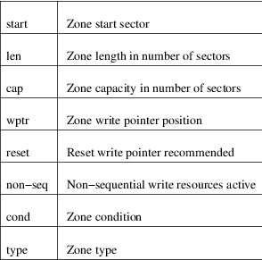
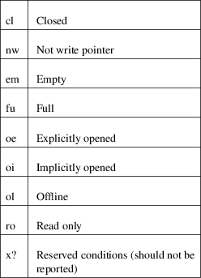

blkzone − run zone command on a device
blkzone command [options] device
blkzone is used to run zone command on device that support the Zoned Block Commands (ZBC) or Zoned−device ATA Commands (ZAC). The zones to operate on can be specified using the offset, count and length options.
The device argument is the pathname of the block device.
report
The command blkzone report is used to report device
zone information.
By default, the command will report all zones from the start of the block device. Options may be used to modify this behavior, changing the starting zone or the size of the report, as explained below.
Report output:

Zone conditions:

capacity
The command blkzone capacity is used to report device
capacity information.
By default, the command will report the sum, in number of sectors, of all zone capacities on the device. Options may be used to modify this behavior, changing the starting zone or the size of the report, as explained below.
reset
The command blkzone reset is used to reset one or
more zones. Unlike sg_reset_wp(8), this command
operates from the block layer and can reset a range of
zones.
open
The command blkzone open is used to explicitly open
one or more zones. Unlike sg_zone(8), open action,
this command operates from the block layer and can open a
range of zones.
close
The command blkzone close is used to close one or
more zones. Unlike sg_zone(8), close action, this
command operates from the block layer and can close a range
of zones.
finish
The command blkzone finish is used to finish
(transition to full condition) one or more zones. Unlike
sg_zone(8), finish action, this command operates from
the block layer and can finish a range of zones.
By default, the reset, open, close and finish commands will operate from the zone at device sector 0 and operate on all zones. Options may be used to modify this behavior as explained below.
The offset and length option arguments may be followed by the multiplicative suffixes KiB (=1024), MiB (=1024*1024), and so on for GiB, TiB, PiB, EiB, ZiB and YiB (the "iB" is optional, e.g., "K" has the same meaning as "KiB") or the suffixes KB (=1000), MB (=1000*1000), and so on for GB, TB, PB, EB, ZB and YB. Additionally, the 0x prefix can be used to specify offset and length in hex.
−o, −−offset sector
The starting zone specified as a sector offset. The provided offset in sector units (512 bytes) should match the start of a zone. The default value is zero.
−l, −−length sectors
The maximum number of sectors the command should operate on. The default value is the number of sectors remaining after offset. This option cannot be used together with the option −−count.
−c, −−count count
The maximum number of zones the command should operate on. The default value is the number of zones starting from offset. This option cannot be used together with the option −−length.
−f, −−force
Enforce commands to change zone status on block devices used by the system.
−v, −−verbose
Display the number of zones returned in the report or the range of sectors reset.
−h, −−help
Display help text and exit.
−V, −−version
Print version and exit.
Shaun Tancheff <shaun@tancheff.com>, Karel Zak <kzak@redhat.com>
sg_rep_zones(8)
For bug reports, use the issue tracker at <https://github.com/util−linux/util−linux/issues>.
The blkzone command is part of the util−linux package which can be downloaded from Linux Kernel Archive <https://www.kernel.org/pub/linux/utils/util−linux/>.